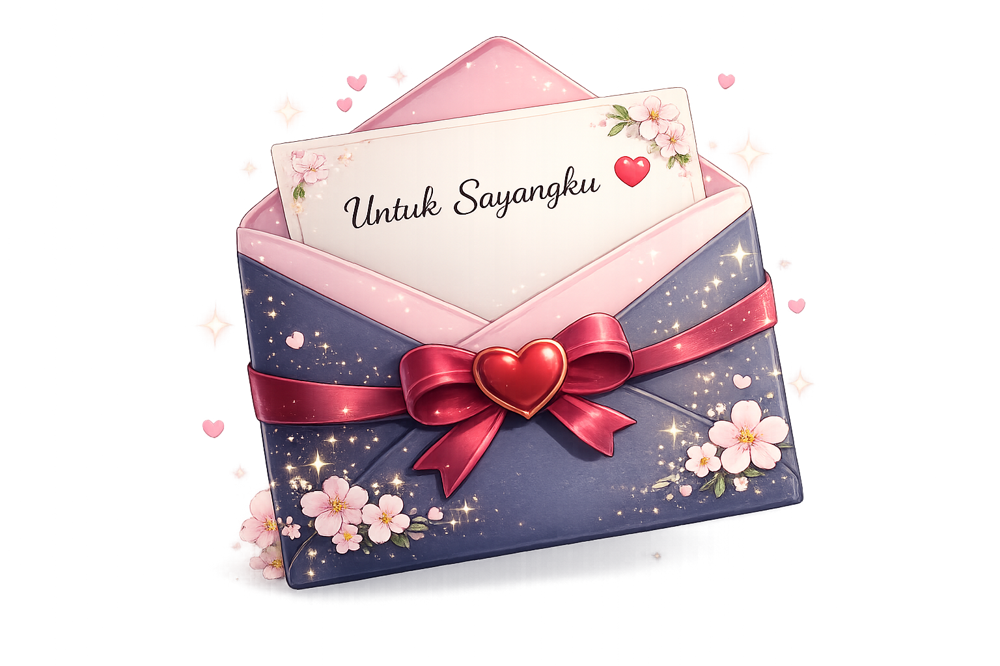

hi sayangg
aku tau akhir akhir ini kita banya masala, aku cuma cuma pengen km baca ini sebentar saja.
aku tau akhir akhir ini kita banya masala, aku cuma cuma pengen km baca ini sebentar saja.


aku disini sadar mungkin ak sering bikin km kecewa. disini ak ga lgi membela diri aku, ak cuma mau minta maaf karna aku kesalahan aku
mungkin kata maaf dari aku ga langsung bikin km langsung maafin aku, tp aku cuma pengen hubungan kita lebih baik
haii sayang 👋🏻
trimaksih suda mau buka link ini, huftt . .
aku disini cm mau minta maaf sama km karena sikap aku akhir-akhir ini yg mungkin bikin km ngerasa ga dihargai dan bikin hubungan kita jadi dingin kaya gini.
aku tau aku salah karena gamau bilang klo aku kenapa-kenapa, tp pls.. aku juga sebenernya gamau kaya gini sayang. aku gasuka bgt klo kita diem-dieman kaya org yg ga kenal.
alasan aku kmrn ga excited ke kamu karena aku masih kecewa sm omongan km tentang mmku. aku jg udh berusaha ngelupain, tp ttp aja masih kaya gimana gitu, apalagi muka km yg kmrn gda rasa bersalah sm sekali.
tp disini aku ga maksud ngebela diri aku, aku cuma pengen nyampein perasaan aku.
aku tau kok pasti km kesel karena kmrn pas km mau tanding aku gda support km sama sekali. ya karena kita masih ada problem. aku tau aku salah udah diemin km, aku tau jg pasti km cape ngadepin sikap aku yg klo ada apa-apa malah diem dan gamau ngomong.
aku sadar aku salah :<
jadi klo km ngerasa km ga dihargai sm aku, itu sebenernya ga bener syg. km itu penting bgt buat aku. aku suka sedih bgt klo sikap km jadi beda sm aku.
sayang, emg km ga sedih klo kita gini-gini terus? kita bertengkar tiap hari, jujur itu cape bgt. bahkan buat marah aja rasanya uda gada energinya lagi.
aku sala bgt uda diemin km kmrn dan ga bilang ke km klo aku kenapa-kenapa. huft...
sorry ya syg, aku cm bisa say sorry ke km klo kaya gini. pasti km udah cape bgt ya? sampe udh gada energi lagi buat ngebujuk aku? haha.
gapapa, karena ini aku yg salah, jadi aku yg minta maaf.
klo aku liat repost-an km yg selalu aja pengen dihargain, berarti aku blm bisa ngehargain km ya sayang??
maaf ya aku blm bisa jadi yg terbaik buat km. maaf jg klo aku cuma pengen dimengerti terus. tp semoga kedepannya aku bisa jadi lebih baik dan bisa ngehargain km lebih dari sebelumnya.
sayang, semoga dengan ini hubungan kita bisa jadi lebih baik ya. aku ga maksa buat km maafin aku, tapi setidaknya aku berharap hubungan kita ga berakhir gara-gara ini ya sayangg.
dan yg mungkin km gatau, aku tu sayanggg bgt sm km, bahkan lebih dari apapun.
jadi maafin sikap aku yg kmrn ya.. kita perbaiki lg bareng-bareng yaa, biar hubungan kita tetep baik-baik aja tanpa ada masalah-masalah kaya gini.
dan maaf uda ngecewain kmu . .
itu aja deh sayang, kurang lebihnya aku minta maaf dan trimakasii suda mau baca sampai sini sayangkuu.
love u more bb!! 🤍

Terima kasih sudah membaca semuanya. Semoga setelah ini kita bisa sama-sama memperbaiki semuanya.❤️